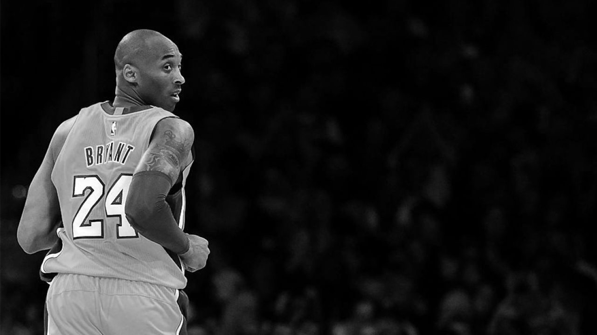
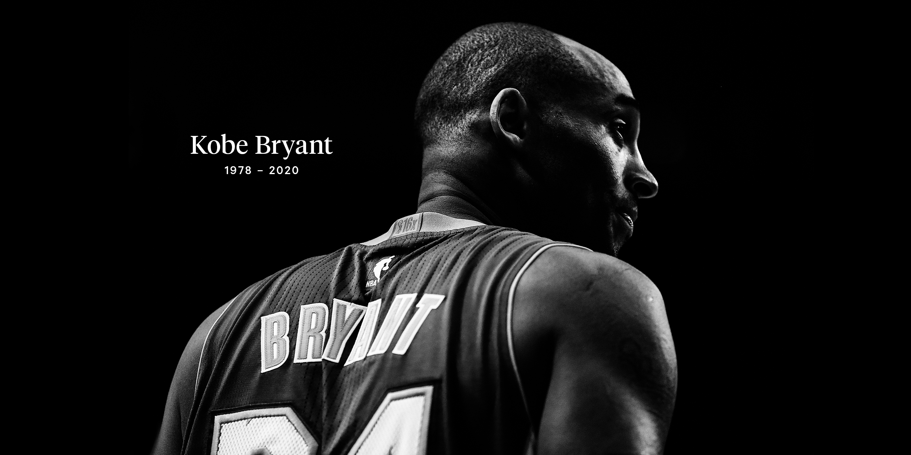
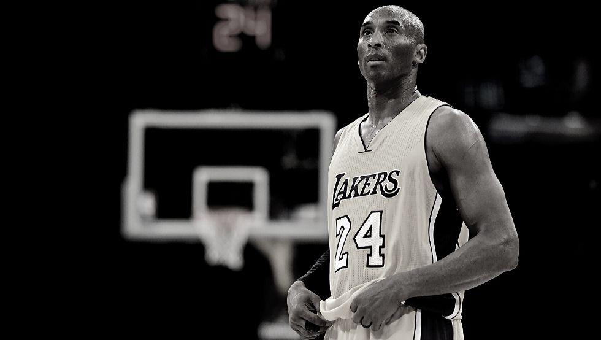
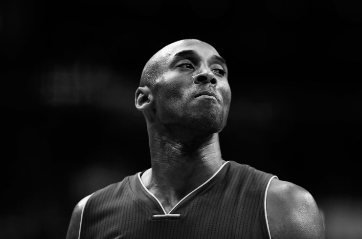
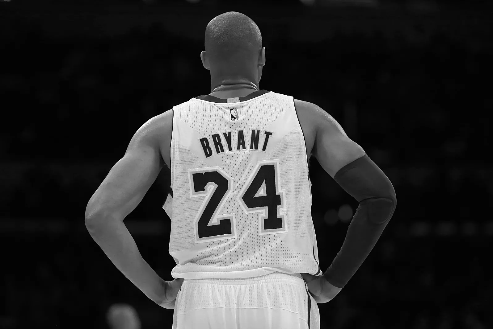

<script src="https://cdn.freecodecamp.org/testable-projects-fcc/v1/bundle.js"></script>
<link href="https://fonts.googleapis.com/css?family=Montserrat:100,100i,200,200i,300,300i,400,400i,500,500i,600,600i,700,700i,800,800i,900,900i&display=swap" rel="stylesheet">
<!DOCTYPE HTML>

<html>
<main>

  <head>
    <meta http-equiv="Content-Type" content="text/html; charset=UTF-8" />
    <meta charset="UTF-8">
    <meta name="viewport" content="width=device-width, initial-scale=1.0">
    <meta http-equiv="X-UA-Compatible" content="ie=edge">
    <title id="title">Tribute to Kobe Bryant</title>
    <link href="style.css" rel="stylesheet" type="text/css">

  </head>

  <body id="main">
    <div id="tribute-info">
      <div id="img-div" class="container">
        
        <figcaption id="img-caption">kobe Bryant image</figcaption>
      </div>
      <div class="contenedor">
        <h1 class="nombre">Kobe Bryant</h1>
        <div class="fecha">1978-2020</div>
        <div class="desc">Who leaded the Los Angeles Lakers</div>
        <div class="desc"> to five championships</div>
      </div>
      <hr>
      <div id="box-container2">
        <div id="box-1">
          <p>Born August 23, 1978, Philadelphia, Pennsylvania, U.S.—died January 26, 2020, Calabasas, California).
            <br>
            <br>American professional basketball player, who helped lead the Los Angeles Lakers of the National Basketball Association (NBA) to five championships (2000–02, 2009–10).</p>
          <a id="tribute-link" href="https://en.wikipedia.org/wiki/Kobe_Bryant" target="_blank" class="button-main">Wikipedia</a>
        </div>
        <div id="box-2">
          <p>Los Angeles Lakers legend Kobe Bryant died Jan. 26 at age 41. Bryant and his 13-year-old daughter, Gianna, were among nine people killed in a helicopter crash in Calabasas, California.
            <br>
            <br> Bryant entered the NBA straight out of high school in 1996 and won five championships and one regular-season MVP award.
            <br>
            <br> Across the world, players, coaches and fans mourned Bryant's death, with multiple teams opening their games with back-to-back 24-second violations.</p>
        </div>
      </div>
      <hr />
      <div class="div-block-2">
        <div class="quote">Quotes:</div>
        <div class="container-grid">
          <div class="d1">
            <div class="paragraph-s">"Everything negative - pressure, challenges - is all an opportunity for me to rise."</div>
            <br>

          </div>
          <div class="d1">
            <div class="paragraph-s">"I don't want to be the next Michael Jordan, I only want to be Kobe Bryant."</div>
            <br>

          </div>
          <div class="d1">
            <div class="paragraph-s">"I’m reflective only in the sense that I learn to move forward. I reflect with a purpose."</div>
            <br>

          </div>
          <div class="d1">
            <div class="paragraph-s">"If you’re afraid to fail, then you’re probably going to fail."</div>
            <br>

          </div>

        </div>
      </div>
      <hr />
      <div class="contenedor-time">
        <div class="tarjeta">
          <div class="fec">Aug. 23, 1978:</div> Bryant is born in Philadelphia. His father, Joe “Jelly Bean” Bryant, played for the 76ers.
        </div>
        <div class="tarjeta">
          <div class="fec"> July 1996:</div> Lakers trade Vlade Divac to Charlotte Hornets for the draft rights to 17-year-old Bryant, the 13th pick in the NBA draf
        </div>

        <div class="tarjeta">
          <div class="fec"> 1996-97:</div> Named to the NBA’s All-Rookie second team. Averages 7.6 points coming off the bench.
        </div>

        <div class="tarjeta">
          <div class="fec">1999-00:</div>With Phil Jackson as coach, and alongside Shaquille O’Neal, Bryant wins his first NBA title as the Lakers beat Pacers in six games.
        </div>

        <div class="tarjeta">
          <div class="fec">2000-01:</div>Scores 51 points against Warriors, Bryant’s first 50-plus game. Averages 28.5 points a game for the season, second on the team to O’Neal (28.7). Lakers repeat as NBA champs, beating 76ers in five games.
        </div>

        <div class="tarjeta">
          <div class="fec">2001-02:</div>All-Star game MVP. Lakers three-peat as champions, sweeping Nets in Finals.
        </div>
        <div class="tarjeta">
          <div class="fec">July 2003:</div>Bryant is arrested and accused of sexual assault in Colorado. He leads the Lakers in scoring in 2003-04, on occasion flying back to Los Angeles for games after court appearances in Colorado on the same day.
          The case is dropped in September 2004.
        </div>
        <div class="tarjeta">
          <div class="fec">2003-04:</div>The last Kobe-Shaq squad loses in the Finals to Detroit. That summer O’Neal is traded and Bryant, a free agent, almost signs with the Clippers but returns to the Lakers after agreeing to a seven-year,
          $136-million deal.
        </div>
        <div class="tarjeta">
          <div class="fec">2004-05:</div>Lakers have a miserable season, finishing 34-48, with new Coach Rudy Tomjanovich quitting in mid-season because of health problems. Bryant misses 16 games because of injuries.
        </div>
        <div class="tarjeta">
          <div class="fec">2005-06:</div>Scores 81 points against Toronto, second-highest total in NBA history behind Wilt Chamberlain’s 100-point effort. Bryant leads league in scoring (35.4) as Jackson returns to coach the team. Lakers lose to
          Phoenix in first round of playoffs.
        </div>
        <div class="tarjeta">
          <div class="fec">2006-07:</div>Bryant wins another scoring title (31.6), but Lakers are ousted again in the first round by the Suns. Soon after Bryant, frustrated by management, says he wants to be traded. Owner Jerry Buss considers trading
          Bryant, but doesn’t.
        </div>
        <div class="tarjeta">
          <div class="fec"> 2007-08:</div>Midseason trade for Pau Gasol makes Lakers a title contender. Bryant wins MVP award. Lakers reach Finals and lose to Boston in six games.
        </div>
        <div class="tarjeta">
          <div class="fec">2008-09:</div>Bryant wins fourth NBA title and is named Finals MVP as Lakers beat Orlando in five games.
        </div>
        <div class="tarjeta">
          <div class="fec">2009-10:</div>Bryant collects his fifth ring as Lakers beat the Celtics in seven games; he’s also named Finals MVP. Signs a three-year, $84-million extension, staying under contract through the 2013-14 season.
        </div>
        <div class="tarjeta">
          <div class="fec">2012-13:</div>Makes 15th All-Star team. Passes Chamberlain for fourth on the NBA’s all-time scoring list. Averages 27.3 points in 38.6 minutes a game for the season before rupturing his left Achilles’ tendon.
        </div>


      </div>

      <aside>
        <hr />
        <h2>About section</h2>
        <p>Donec eu libero sit amet quam egestas semper. Aenean ultricies mi vitae est. Mauris placerat eleifend leo.</p>
      </aside>

      <footer>
        <div class="container_foot">
          <p>© 2020 Pedro Perez </p>
        </div>
      </footer>
    </div>
  </body>

</main>

</html>
